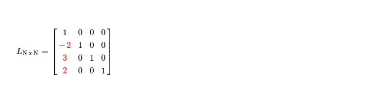

Last week I worked on implementing LU decomposition on GPGPU using SYCL DPC++. Being a pretty useful method for solving system of linear equations, finding determinant & inverse of matrix, I thought it is worth taking a look at this problem, where I attempt to implement its SIMD form, capable of running in high throughput machine --- GPGPUs. My objective will be to split a given matrix AN x N into lower & upper triangular matrices LN x N, UN x N respectively such that
I'll start working with an example, where I go through steps of algorithm while talking about its respective SIMD implementation. I choose to work with following matrix.
As I know I've to split A into L & U, I start by taking two square matrices, initially setting L = IN x N & U = A.
As LU decomposition is just forward elimination step of Gauss-Jordan method, used for solving system of linear equations, while recording elementary row operation's in LN x N --- I start working on column0, hoping to zero out all cells below pivot U0, 0. First I record these elementary row operations in LN x N, which has all pivots set to 1.
Resulting LN x N looks like below
Now I zero out all elements below U0, 0 while applying row operation across whole rows of submatrix of UN x N. I can express it in following snippet of pseudocode.
Resulting UN x N must look like below, where marked submatrix was operated on.
From first iteration of elimination step, where I worked to zero out elements below U0, 0 , it can clearly understood updation of L & U can go side by side. After each round of elimination where Ui, i is chosen to be pivot of interest, original matrix A can be updated by content of updated U as my interest during next iteration ( when Ui+1, i+1 becomes pivot ) will be to clean up cells below chosen pivot Ui+1, i+1, while recording elementary row operations in LN x N.
Current pivot is U1, 1 & I record elimination steps in LN x N, resulting into following L.
In parallel I also update marked submatrix of UN x N, resulting into following.
After copying UN x N into AN x N, I select U2, 2 as pivot in final elimination step. In parallel updation of both L & U results into following matrices.
There's one more pivot in U i.e. U3, 3, which doesn't need to be processed anyhow as there's no forward elimination step which can be performed with this pivot. Also both L & U are in desired triangular form. Just to assert that LU decomposition worked, I do L x U, resulting into A.
As LU decomposition has data dependency on previous iterations, I have to offload computation
into GPGPU in multiple iterations. Selecting each pivot is done on host machine, while processing
of selected pivot i.e. forward elimination in U & recording of respective elementary row operations in L
are performed on GPGPU. Another thing to notice, in each iteration during elimination of cells below selected pivot,
dimension of submatrix under operation keeps decreasing.
I can express scope of parallelism in LU decomposition using following diagram.
SIMD LU decomposition's performance turns out to be satisfactory. I was expecting better performance with a 1024 x 1024 random dense matrix. I note, one definite reason behind not-so-good performance is after each iteration I'm performing large copy from UN x N to AN x N. Also as dimension of operable sub-matrix keeps decreasing after each iteration, lots of work items are just doing nothing useful --- huge loss !
My interest in coming days will be to figure out a way to reduce lost computation cycles, where lots of work items are doing nothing as they're pointing to cell
which doesn't belong to current operable sub-matrix.
I'll also like to take a look at how I can reduce amount of back and forth memcpy(s), which are expensive. I keep current SIMD implementation of LU factorization
here for future reference.
Have a great time !